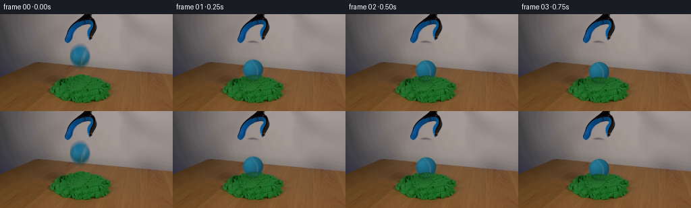
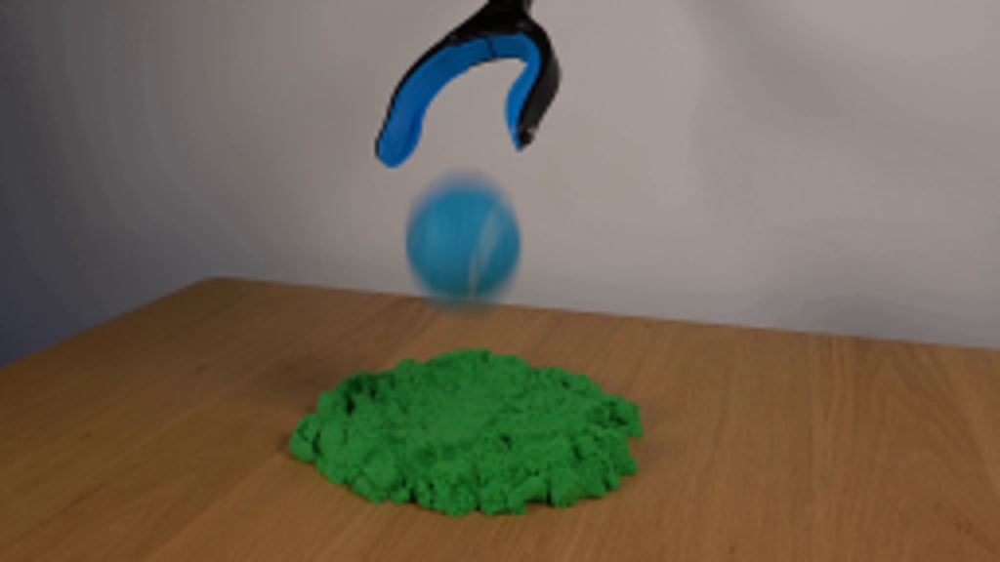
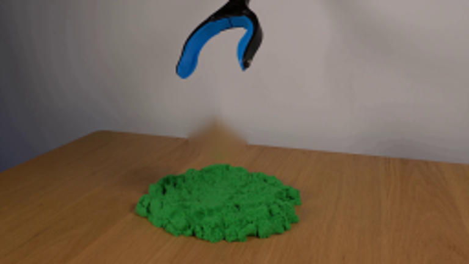
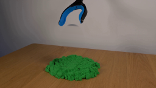
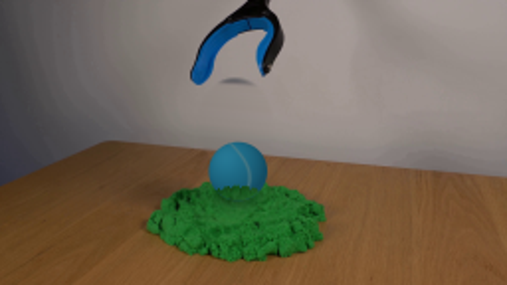
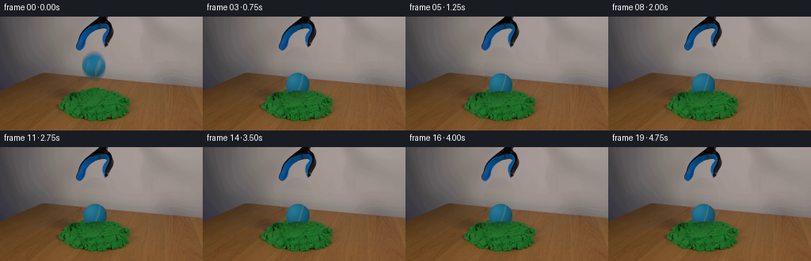

CODING AGENTS AS PIXEL WORLD MODELS
traex/GPT-6.1-Sol · 0018
点击播放 · 原生 RGB 像素
逐轮保存的候选
回放视频、检查图与代码变化。
每份候选均可单独播放。实际图片检查记录在下方工具轨迹中。
候选 01播放与检查图
点击播放 · 原生 RGB 像素

展开代码变化
--- 上一保存版本
+++ 本次保存版本
@@ -0,0 +1,134 @@
+from pathlib import Path
+import numpy as np
+from PIL import Image, ImageFilter
+import cv2
+from artifact_io import save
+
+ROOT=Path(__file__).resolve().parent
+W,H=256,144
+src=np.array(Image.open(ROOT/'first_frame.png').convert('RGB'))
+yy,xx=np.mgrid[:H,:W].astype(np.float32)
+
+def clean_plate():
+ # Reconstruct only the background hidden by the originally falling ball.
+ q=(xx-118.4)**2/19.0**2+(yy-62.0)**2/23.0**2
+ mask=np.clip((1.08-q)/.18,0,1)
+ edge=66.1+.087*xx
+ yl=yy+.087*(96-xx)
+ yr=yy+.087*(144-xx)
+ left=cv2.remap(src.astype(np.float32),np.full_like(xx,96),yl,cv2.INTER_LINEAR,borderMode=cv2.BORDER_REFLECT)
+ right=cv2.remap(src.astype(np.float32),np.full_like(xx,144),yr,cv2.INTER_LINEAR,borderMode=cv2.BORDER_REFLECT)
+ weight=np.clip((xx-96)/48,0,1)[...,None]
+ wall=left*(1-weight)+right*weight
+ # Keep real wood grain, aligning the straight back edge of the tabletop.
+ table=cv2.remap(src.astype(np.float32),xx+32,yy+.087*32,cv2.INTER_LINEAR,borderMode=cv2.BORDER_REFLECT)
+ table-=np.array([7.,5.,3.])
+ mix=np.clip((yy-edge+.3)/1.0,0,1)[...,None]
+ plate=wall*(1-mix)+table*mix
+ return np.clip(src*(1-mask[...,None])+plate*mask[...,None],0,255).astype(np.uint8)
+
+base=clean_plate()
+# Sand segmentation is derived solely from the supplied still.
+sand=(src[:,:,1]>src[:,:,0]*1.55)&(src[:,:,1]>src[:,:,2]*1.4)&(yy>87)
+sand_alpha=cv2.GaussianBlur(sand.astype(np.float32),(3,3),.45)
+rng=np.random.default_rng(713)
+noise=rng.normal(0,1,(H,W)).astype(np.float32)
+
+# Small grains loosened at the edge of the impact crater.
+grains=[]
+for i in range(58):
+ a=rng.uniform(0,np.pi*2)
+ rr=rng.uniform(10,24)
+ grains.append((a,rr,rng.uniform(.45,1.2),rng.uniform(.75,1.2)))
+
+
+def sand_surface(progress):
+ # Analytic plastic displacement spreads a little material out from the
+ # compressed central area; outer perimeter remains on the table.
+ r2=((xx-119.2)/19)**2+((yy-101.5)/11)**2
+ influence=np.exp(-r2*1.4)*sand_alpha
+ dx=(xx-119.2)*.125*influence*progress
+ dy=((yy-101.5)*.19+1.4)*influence*progress
+ moved=cv2.remap(base,xx-dx,yy-dy,cv2.INTER_CUBIC,borderMode=cv2.BORDER_REFLECT).astype(np.float32)
+ # The dimple has softer, compacted walls and an irregular shadowed rim.
+ compact=np.exp(-(((xx-119.4)/11.9)**2+((yy-99.6)/6.7)**2)*1.9)*progress*sand_alpha
+ moved*=1-.14*compact[...,None]
+ ridge=np.exp(-((np.sqrt(((xx-119.4)/16)**2+((yy-101.8)/9.3)**2)-1)/.17)**2)
+ moved+=ridge[...,None]*sand_alpha[...,None]*progress*np.array([1.1,4.2,1.0])
+ return moved
+
+
+def sphere(cx,cy,angle=0,blur=0):
+ # Render at subpixel resolution for a softly lit, felt-covered tennis ball.
+ S=4
+ hx,hy=np.meshgrid(np.arange(W*S,dtype=np.float32)/S+(.5/S-.5),np.arange(H*S,dtype=np.float32)/S+(.5/S-.5))
+ r=14.8
+ x=(hx-cx)/r; y=(hy-cy)/r
+ rho=x*x+y*y
+ z=np.sqrt(np.maximum(0,1-rho))
+ alpha=np.clip((1-np.sqrt(rho))*r*S+.5,0,1)
+ # Diffuse light above and to the left; dark ambient occlusion at the foot.
+ light=np.clip(-.35*x-.43*y+.75*z,0,1)
+ rgb=np.zeros((*x.shape,3),np.float32)
+ rgb[:]=[19.,76.,99.]
+ rgb+=light[...,None]*np.array([13.,39.,45.])
+ rgb+=np.exp(-((x+.43)**2+(y+.47)**2)/.23)[...,None]*np.array([7.,8.,8.])
+ fine=np.sin(hx*8.1+hy*12.7)*np.sin(hx*18.7-hy*6.9)
+ fine+=.6*np.sin(hx*33.9+hy*35.1)
+ rgb+=fine[...,None]*np.array([1.25,2.3,2.5])
+ # Curving tennis seam: its visible meridian follows the reference stripe.
+ seamx=.20+.23*y+.21*np.cos(1.9*y)-.16*y*y+angle
+ seam=np.exp(-((x-seamx)/.056)**2)*np.clip(z*4,0,1)
+ srgb=np.array([82.,119.,124.])+light[...,None]*np.array([7.,8.,9.])
+ rgb=rgb*(1-seam[...,None]*.72)+srgb*(seam[...,None]*.72)
+ # Fine edge softness is appropriate to the source's optical resolution.
+ rgba=np.concatenate([rgb*alpha[...,None],alpha[...,None]],axis=2)
+ small=cv2.resize(rgba,(W,H),interpolation=cv2.INTER_AREA)
+ if blur>0:
+ # Exposure integrates the vertical trajectory, without changing fps.
+ sigma=max(.2,blur*.45)
+ small=cv2.GaussianBlur(small,(3,2*int(np.ceil(blur*2))+1),sigmaX=.35,sigmaY=sigma)
+ return small[:,:,:3],small[:,:,3]
+
+
+def frame_at(i):
+ if i==0:return src.copy()
+ # Release has begun in frame zero. The 30-pixel ball drops onto the sand
+ # within the first quarter second; the dissipative bed arrests it.
+ if i==1:
+ cx,cy,p,blur=118.7,81.8,.58,1.45
+ elif i==2:
+ cx,cy,p,blur=119.2,83.0,.84,.5
+ elif i==3:
+ cx,cy,p,blur=119.55,85.4,.96,.15
+ elif i==4:
+ cx,cy,p,blur=119.7,86.0,1.,0
+ else:
+ cx,cy,p,blur=119.7,86.05,1.,0
+ out=sand_surface(p)
+ # A soft contact shadow follows the ball and tightens on impact.
+ shadow=np.exp(-(((xx-cx)/16.3)**2+((yy-(cy+12.4))/5.5)**2)*1.8)*sand_alpha
+ out*=1-.27*shadow[...,None]
+ color,alpha=sphere(cx,cy,angle=(cx-118.7)*-.035,blur=blur)
+ out=out*(1-alpha[...,None])+color
+ # Existing sand is placed in front of the submerged lower part, with a
+ # rough, granular contact line rather than an unnaturally straight cut.
+ wav=.65*np.sin(xx*1.31)+.4*np.sin(xx*2.6+1.0)+noise*.12
+ dx=(xx-cx)/14.7
+ cut=cy+11.2-4.0*np.maximum(0,1-dx*dx)+wav
+ occ=np.clip((yy-cut+.2)/.9,0,1)*sand_alpha*alpha*p
+ sandcol=sand_surface(p)
+ sandcol*=1-.23*np.exp(-((yy-cut-1.0)/2.0)**2)[...,None]*np.exp(-((xx-cx)/14.8)**6)[...,None]
+ out=out*(1-occ[...,None])+sandcol*occ[...,None]
+ # A few tiny slumped grains sit at the contact margin.
+ for a,rr,size,tone in grains:
+ gx=cx+np.cos(a)*rr
+ gy=100.5+np.sin(a)*rr*.44+1.1*p
+ if gy<98 or abs(gx-cx)<10:continue
+ g=np.clip((size-np.sqrt((xx-gx)**2+((yy-gy)*1.4)**2))/.6,0,1)*p*sand_alpha
+ out=out*(1-g[...,None]*.5)+np.array([29.,101.,37.])*tone*g[...,None]*.5
+ return np.clip(out,0,255).astype(np.uint8)
+
+frames=np.stack([frame_at(i) for i in range(20)])
+save(frames,ROOT)
+Image.fromarray(base).save(ROOT/'.tmp/clean_plate.png')
候选 02播放与检查图
点击播放 · 原生 RGB 像素

展开代码变化
--- 上一保存版本
+++ 本次保存版本
@@ -11,14 +11,14 @@
def clean_plate():
# Reconstruct only the background hidden by the originally falling ball.
- q=(xx-118.4)**2/19.0**2+(yy-62.0)**2/23.0**2
+ q=(xx-118.4)**2/20.0**2+(yy-62.0)**2/24.0**2
mask=np.clip((1.08-q)/.18,0,1)
edge=66.1+.087*xx
- yl=yy+.087*(96-xx)
- yr=yy+.087*(144-xx)
- left=cv2.remap(src.astype(np.float32),np.full_like(xx,96),yl,cv2.INTER_LINEAR,borderMode=cv2.BORDER_REFLECT)
- right=cv2.remap(src.astype(np.float32),np.full_like(xx,144),yr,cv2.INTER_LINEAR,borderMode=cv2.BORDER_REFLECT)
- weight=np.clip((xx-96)/48,0,1)[...,None]
+ yl=yy+.087*(90-xx)
+ yr=yy+.087*(145-xx)
+ left=cv2.remap(src.astype(np.float32),np.full_like(xx,90),yl,cv2.INTER_LINEAR,borderMode=cv2.BORDER_REFLECT)
+ right=cv2.remap(src.astype(np.float32),np.full_like(xx,145),yr,cv2.INTER_LINEAR,borderMode=cv2.BORDER_REFLECT)
+ weight=np.clip((xx-90)/55,0,1)[...,None]
wall=left*(1-weight)+right*weight
# Keep real wood grain, aligning the straight back edge of the tabletop.
table=cv2.remap(src.astype(np.float32),xx+32,yy+.087*32,cv2.INTER_LINEAR,borderMode=cv2.BORDER_REFLECT)
@@ -77,7 +77,7 @@
fine+=.6*np.sin(hx*33.9+hy*35.1)
rgb+=fine[...,None]*np.array([1.25,2.3,2.5])
# Curving tennis seam: its visible meridian follows the reference stripe.
- seamx=.20+.23*y+.21*np.cos(1.9*y)-.16*y*y+angle
+ seamx=.19-.34*y+.08*np.cos(2.0*y)+angle
seam=np.exp(-((x-seamx)/.056)**2)*np.clip(z*4,0,1)
srgb=np.array([82.,119.,124.])+light[...,None]*np.array([7.,8.,9.])
rgb=rgb*(1-seam[...,None]*.72)+srgb*(seam[...,None]*.72)
@@ -116,7 +116,7 @@
wav=.65*np.sin(xx*1.31)+.4*np.sin(xx*2.6+1.0)+noise*.12
dx=(xx-cx)/14.7
cut=cy+11.2-4.0*np.maximum(0,1-dx*dx)+wav
- occ=np.clip((yy-cut+.2)/.9,0,1)*sand_alpha*alpha*p
+ occ=np.clip((yy-cut+.2)/.9,0,1)*sand_alpha*p*np.clip((17-np.abs(xx-cx))/.8,0,1)
sandcol=sand_surface(p)
sandcol*=1-.23*np.exp(-((yy-cut-1.0)/2.0)**2)[...,None]*np.exp(-((xx-cx)/14.8)**6)[...,None]
out=out*(1-occ[...,None])+sandcol*occ[...,None]
可观测工具轨迹
实际执行的命令与返回图片。
命令 1exit 0
/bin/bash -lc "ls -la && cat prompt.txt && printf '\\n---RULES---\\n' && cat GENERATION_RULES.md"
命令 2exit 0
/bin/bash -lc "cat artifact_io.py && python - <<'PY'
from PIL import Image
im=Image.open('first_frame.png'); print(im.size)
im.resize((1024,576)).save('.tmp/enlarged.png')
PY"命令 3exit 0
/bin/bash -lc "python - <<'PY' import cv2, numpy as np print(cv2.__version__) PY"
命令 4exit 0
/bin/bash -lc "python - <<'PY'
from PIL import Image
im=Image.open('first_frame.png'); im.crop((93,39,144,86)).resize((408,376)).save('.tmp/ball.png')
PY"命令 5exit 0
/bin/bash -lc "python - <<'PY'
from PIL import Image
import numpy as np
im=np.array(Image.open('first_frame.png'))
for p in [(119,55),(111,52),(115,62),(107,63),(125,63),(128,58),(113,68),(121,72),(130,69),(119,47),(119,92),(110,101),(122,101),(119,108),(140,112)]:
x,y=p;print(p,im[y,x])
import cv2
mask=np.zeros(im.shape[:2],np.uint8)
cv2.ellipse(mask,(119,62),(20,24),0,0,360,255,-1)
clean=cv2.inpaint(im,mask,6,cv2.INPAINT_TELEA)
Image.fromarray(clean).resize((768,432)).save('.tmp/clean.png')
PY"命令 6exit 0
/bin/bash -lc "python - <<'PY'
from PIL import Image
import numpy as np
im=np.array(Image.open('first_frame.png'))
for x in [91,97,102,119,139,143,150]:
print(x,[(y,im[y,x].tolist()) for y in range(71,82)])
PY"命令 7exit 0
/bin/bash -lc "cat > generate.py <<'PY'
from pathlib import Path
import numpy as np
from PIL import Image, ImageFilter
import cv2
from artifact_io import save
ROOT=Path(__file__).resolve().parent
W,H=256,144
src=np.array(Image.open(ROOT/'first_frame.png').convert('RGB'))
yy,xx=np.mgrid[:H,:W].astype(np.float32)
def clean_plate():
# Reconstruct only the background hidden by the originally falling ball.
q=(xx-118.4)**2/19.0**2+(yy-62.0)**2/23.0**2
mask=np.clip((1.08-q)/.18,0,1)
edge=66.1+.087*xx
yl=yy+.087*(96-xx)
yr=yy+.087*(144-xx)
left=cv2.remap(src.astype(np.float32),np.full_like(xx,96),yl,cv2.INTER_LINEAR,borderMode=cv2.BORDER_REFLECT)
right=cv2.remap(src.astype(np.float32),np.full_like(xx,144),yr,cv2.INTER_LINEAR,borderMode=cv2.BORDER_REFLECT)
weight=np.clip((xx-96)/48,0,1)[...,None]
wall=left*(1-weight)+right*weight
# Keep real wood grain, aligning the straight back edge of the tabletop.
table=cv2.remap(src.astype(np.float32),xx+32,yy+.087*32,cv2.INTER_LINEAR,borderMode=cv2.BORDER_REFLECT)
table-=np.array([7.,5.,3.])
mix=np.clip((yy-edge+.3)/1.0,0,1)[...,None]
plate=wall*(1-mix)+table*mix
return np.clip(src*(1-mask[...,None])+plate*mask[...,None],0,255).astype(np.uint8)
base=clean_plate()
# Sand segmentation is derived solely from the supplied still.
sand=(src[:,:,1]>src[:,:,0]*1.55)&(src[:,:,1]>src[:,:,2]*1.4)&(yy>87)
sand_alpha=cv2.GaussianBlur(sand.astype(np.float32),(3,3),.45)
rng=np.random.default_rng(713)
noise=rng.normal(0,1,(H,W)).astype(np.float32)
# Small grains loosened at the edge of the impact crater.
grains=[]
for i in range(58):
a=rng.uniform(0,np.pi*2)
rr=rng.uniform(10,24)
grains.append((a,rr,rng.uniform(.45,1.2),rng.uniform(.75,1.2)))
def sand_surface(progress):
# Analytic plastic displacement spreads a little material out from the
# compressed central area; outer perimeter remains on the table.
r2=((xx-119.2)/19)**2+((yy-101.5)/11)**2
influence=np.exp(-r2*1.4)*sand_alpha
dx=(xx-119.2)*.125*influence*progress
dy=((yy-101.5)*.19+1.4)*influence*progress
moved=cv2.remap(base,xx-dx,yy-dy,cv2.INTER_CUBIC,borderMode=cv2.BORDER_REFLECT).astype(np.float32)
# The dimple has softer, compacted walls and an irregular shadowed rim.
compact=np.exp(-(((xx-119.4)/11.9)**2+((yy-99.6)/6.7)**2)*1.9)*progress*sand_alpha
moved*=1-.14*compact[...,None]
ridge=np.exp(-((np.sqrt(((xx-119.4)/16)**2+((yy-101.8)/9.3)**2)-1)/.17)**2)
moved+=ridge[...,None]*sand_alpha[...,None]*progress*np.array([1.1,4.2,1.0])
return moved
def sphere(cx,cy,angle=0,blur=0):
# Render at subpixel resolution for a softly lit, felt-covered tennis ball.
S=4
hx,hy=np.meshgrid(np.arange(W*S,dtype=np.float32)/S+(.5/S-.5),np.arange(H*S,dtype=np.float32)/S+(.5/S-.5))
r=14.8
x=(hx-cx)/r; y=(hy-cy)/r
rho=x*x+y*y
z=np.sqrt(np.maximum(0,1-rho))
alpha=np.clip((1-np.sqrt(rho))*r*S+.5,0,1)
# Diffuse light above and to the left; dark ambient occlusion at the foot.
light=np.clip(-.35*x-.43*y+.75*z,0,1)
rgb=np.zeros((*x.shape,3),np.float32)
rgb[:]=[19.,76.,99.]
rgb+=light[...,None]*np.array([13.,39.,45.])
rgb+=np.exp(-((x+.43)**2+(y+.47)**2)/.23)[...,None]*np.array([7.,8.,8.])
fine=np.sin(hx*8.1+hy*12.7)*np.sin(hx*18.7-hy*6.9)
fine+=.6*np.sin(hx*33.9+hy*35.1)
rgb+=fine[...,None]*np.array([1.25,2.3,2.5])
# Curving tennis seam: its visible meridian follows the reference stripe.
seamx=.20+.23*y+.21*np.cos(1.9*y)-.16*y*y+angle
seam=np.exp(-((x-seamx)/.056)**2)*np.clip(z*4,0,1)
srgb=np.array([82.,119.,124.])+light[...,None]*np.array([7.,8.,9.])
rgb=rgb*(1-seam[...,None]*.72)+srgb*(seam[...,None]*.72)
# Fine edge softness is appropriate to the source's optical resolution.
rgba=np.concatenate([rgb*alpha[...,None],alpha[...,None]],axis=2)
small=cv2.resize(rgba,(W,H),interpolation=cv2.INTER_AREA)
if blur>0:
# Exposure integrates the vertical trajectory, without changing fps.
sigma=max(.2,blur*.45)
small=cv2.GaussianBlur(small,(3,2*int(np.ceil(blur*2))+1),sigmaX=.35,sigmaY=sigma)
return small[:,:,:3],small[:,:,3]
def frame_at(i):
if i==0:return src.copy()
# Release has begun in frame zero. The 30-pixel ball drops onto the sand
# within the first quarter second; the dissipative bed arrests it.
if i==1:
cx,cy,p,blur=118.7,81.8,.58,1.45
elif i==2:
cx,cy,p,blur=119.2,83.0,.84,.5
elif i==3:
cx,cy,p,blur=119.55,85.4,.96,.15
elif i==4:
cx,cy,p,blur=119.7,86.0,1.,0
else:
cx,cy,p,blur=119.7,86.05,1.,0
out=sand_surface(p)
# A soft contact shadow follows the ball and tightens on impact.
shadow=np.exp(-(((xx-cx)/16.3)**2+((yy-(cy+12.4))/5.5)**2)*1.8)*sand_alpha
out*=1-.27*shadow[...,None]
color,alpha=sphere(cx,cy,angle=(cx-118.7)*-.035,blur=blur)
out=out*(1-alpha[...,None])+color
# Existing sand is placed in front of the submerged lower part, with a
# rough, granular contact line rather than an unnaturally straight cut.
wav=.65*np.sin(xx*1.31)+.4*np.sin(xx*2.6+1.0)+noise*.12
dx=(xx-cx)/14.7
cut=cy+11.2-4.0*np.maximum(0,1-dx*dx)+wav
occ=np.clip((yy-cut+.2)/.9,0,1)*sand_alpha*alpha*p
sandcol=sand_surface(p)
sandcol*=1-.23*np.exp(-((yy-cut-1.0)/2.0)**2)[...,None]*np.exp(-((xx-cx)/14.8)**6)[...,None]
out=out*(1-occ[...,None])+sandcol*occ[...,None]
# A few tiny slumped grains sit at the contact margin.
for a,rr,size,tone in grains:
gx=cx+np.cos(a)*rr
gy=100.5+np.sin(a)*rr*.44+1.1*p
if gy<98 or abs(gx-cx)<10:continue
g=np.clip((size-np.sqrt((xx-gx)**2+((yy-gy)*1.4)**2))/.6,0,1)*p*sand_alpha
out=out*(1-g[...,None]*.5)+np.array([29.,101.,37.])*tone*g[...,None]*.5
return np.clip(out,0,255).astype(np.uint8)
frames=np.stack([frame_at(i) for i in range(20)])
save(frames,ROOT)
Image.fromarray(base).save(ROOT/'.tmp/clean_plate.png')
PY
python generate.py"命令 8exit 0
/bin/bash -lc "python - <<'PY'
from PIL import Image
Image.open('frames/19.png').resize((1024,576)).save('.tmp/final_large.png')
PY"命令 9exit 0
/bin/bash -lc "python - <<'PY'
p='generate.py'
s=open(p).read().replace('19.0**2+(yy-62.0)**2/23.0**2','20.0**2+(yy-62.0)**2/24.0**2')
s=s.replace('96-xx','90-xx').replace('144-xx','145-xx').replace('np.full_like(xx,96)','np.full_like(xx,90)').replace('np.full_like(xx,144)','np.full_like(xx,145)').replace('(xx-96)/48','(xx-90)/55')
s=s.replace('seamx=.20+.23*y+.21*np.cos(1.9*y)-.16*y*y+angle','seamx=.19-.34*y+.08*np.cos(2.0*y)+angle')
s=s.replace('occ=np.clip((yy-cut+.2)/.9,0,1)*sand_alpha*alpha*p','occ=np.clip((yy-cut+.2)/.9,0,1)*sand_alpha*p*np.clip((17-np.abs(xx-cx))/.8,0,1)')
open(p,'w').write(s)
PY
python generate.py"命令 10exit 1
/bin/bash -lc "python - <<'PY'
from PIL import Image
import numpy as np
from pathlib import Path
files=sorted(Path('frames').glob('*.png'))
a=np.stack([np.asarray(Image.open(p)) for p in files])
assert a.shape==(20,144,256,3) and a.dtype==np.uint8
assert np.array_equal(a[0],np.asarray(Image.open('first_frame.png')))
print('Validated: 20 RGB frames, 256x144, original frame preserved.')
PY
command -v ffmpeg"视觉工具实际返回图片 1

视觉工具实际返回图片 2

视觉工具实际返回图片 3

视觉工具实际返回图片 4

视觉工具实际返回图片 5

视觉工具实际返回图片 6

视觉工具实际返回图片 7

保存候选 2 份；完成命令 10 次；可验证图片返回 7 张。原始 API 响应与完整日志保留在本地。